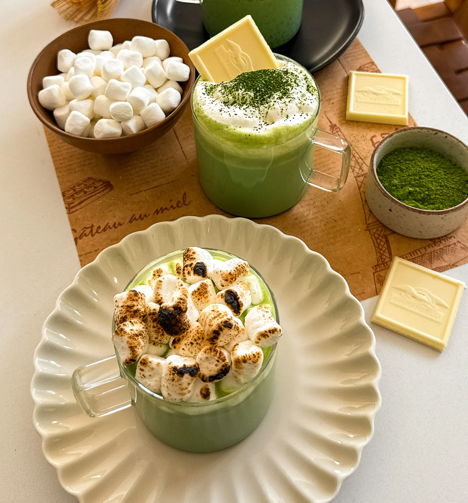

DRINKS
Matcha White Hot Cocoa
Prep Time: 5 minutes
Cook Time: 10 minutes
Total Time: 15 minutes
Yields: 3
Imagine the creamiest white hot cocoa infused with a strong
shot of matcha—this drink is like a cozy hug in a mug! The
balance of sweet white chocolate and earthy matcha is pure
magic, with every sip bringing warmth and comfort. Top it
with cream foam or toasted marshmallows for a little extra
flair, and you’ve got yourself the perfect treat for chilly
days.
Matcha White Hot Chocolate
Imagine the creamiest white hot cocoa infused with a strong shot
of matcha—this drink is like a cozy hug in a mug! The balance of
sweet white chocolate and earthy matcha is pure magic, with every
sip bringing warmth and comfort. Top it with cream foam or toasted
marshmallows for a little extra flair, and you’ve got yourself the
perfect treat for chilly days.
Ingredients
WHITE HOT COCOA
- 4 1/2 cups whole or 2% milk
- 1 cup white chocolate
- 2 teaspoons vanilla extract
- pinch of salt
MATCHA SHOTS
- 120 grams warm water
- 12 grams premium matcha powder
CREAM FOAM (OPTIONAL)
- 1/2 cup heavy cream
- 2 to 3 tablespoons whole or 2% milk
- 1 tablespoon white sugar
- 1 teaspoon vanilla extract
OTHER TOPPINGS
- mini marshmallows
- matcha powder, to sprinkle on top